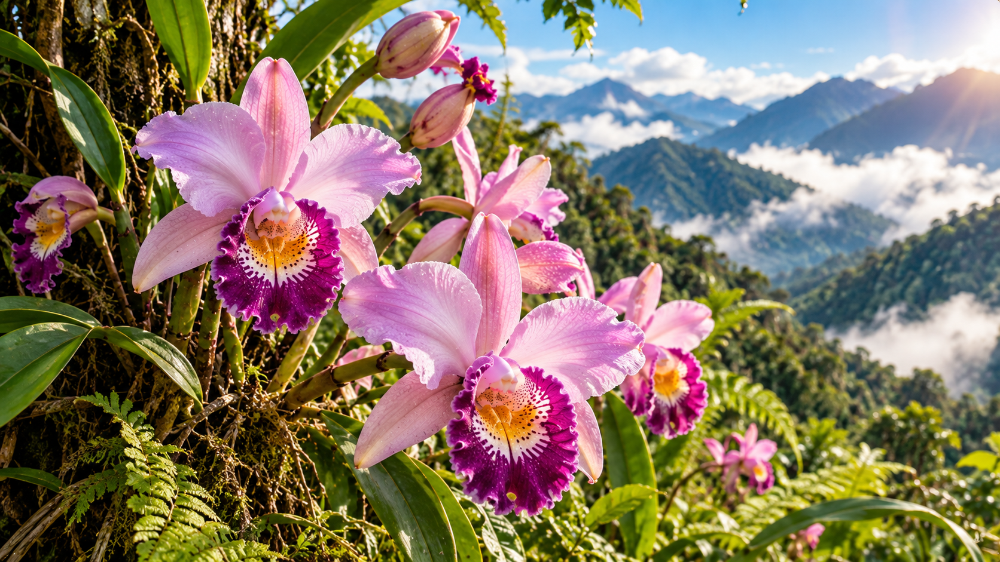

🌎 Hábitat
🐝 Importancia ecológica
🔎 Para aprender más
💚 ¿Cómo podemos protegerla?
🎬 Aprende con nuestros videos
Explora las características de esta sección y descubre cómo cuidar la biodiversidad.
🎮 ¡Aprende jugando!
🧠 ¡Aprende y responde!
Contesta las preguntas usando la información que acabas de leer.
¡Terminaste el cuestionario!
Tu resultado:
🎲 ¡Encuentra las parejas!
Selecciona una carta para descubrir su símbolo y luego elige otra. Si coinciden, la pareja quedará descubierta.
Parejas: 0 de 6
Intentos: 0
¡El juego está listo! Encuentra las seis parejas.